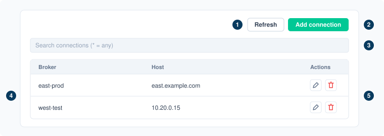
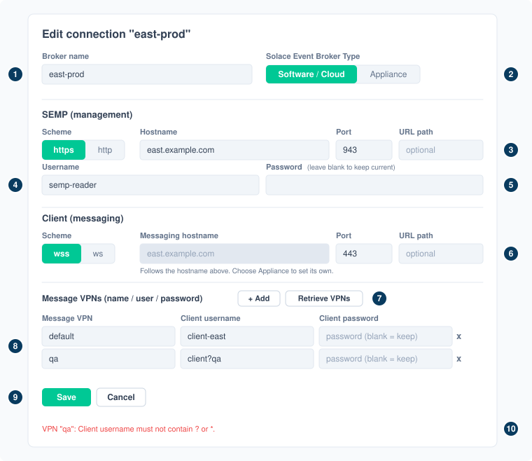
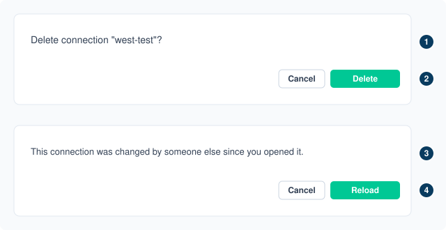

Keep the list of brokers the gateway reaches for its users. For each broker you set where it is, the account the gateway uses to manage it, and the Message VPNs with the credentials users connect with.
Conn. Mgmt is a page of the administration app at /solAdmin, and it needs a signed-in administrator. In any other session, signed out or signed in as a user who is not an administrator, the page shows Administrator Sign-in Required and the line Sign in as an administrator to manage connections. in place of everything below. Sign in as an administrator and the page loads the list by itself.
Users never see these details. They pick a broker and a Message VPN by name, and the gateway uses the stored account and credentials on their behalf. The setup of the gateway itself is in the operator's guide.
The page has two views: the list of connections, and the form you use to add or edit one. Figure 1 shows the list.

Search connections (* = any).Type in the search box and the list narrows as you type. A row stays when your text appears in its broker name or in its host, in any letter case: east finds East-Prod and east.example.com. Put * in the text to stand for any run of characters: e*prod finds east-prod. Changing the text never contacts the gateway.
With no connections, the table says No connections. When the search matches none, it says No connections match "your text". If the list cannot be loaded, the reason shows in red under the table.
Press Refresh to load the list again, for example after another administrator made a change. It also takes you back to the list if the form is open.
https and wss chosen as the schemes, and no ports or Message VPNs.Connection saved and returns to the list, loaded again.The form is the same one you use to edit a connection, so Figure 2 shows it with a connection open.

(leave blank to keep current).| Field | What it is | What it accepts |
|---|---|---|
| Broker name | The name of the connection. Users are granted brokers by this name, and the list is kept by it. | Required. 1 to 64 characters from A-Z a-z 0-9 . _ -, and not only dots. The name must not be in the list already. While you edit, the box is locked: the name is what identifies the connection. |
| Hostname | The address the gateway connects to, for both SEMP and messaging. | Required. A bare host name (A-Z a-z 0-9 . _ -, up to 253 characters, beginning and ending with a letter, a digit or _) or an IP address. IPv6 goes without brackets. No https://, no port, no path, no spaces. |
SEMP is how the gateway reads a broker's configuration for its users: queues, subscriptions and the like. The gateway signs in with the account you give here and passes on to each user only what that user is granted.
| Field | What it accepts | Default |
|---|---|---|
| Scheme | https (TLS) or http (plain). Choose http only for a broker whose SEMP port does not serve TLS, on a network you trust: the gateway then reaches it unencrypted, and the account's password crosses that hop in clear text. | https (TLS) |
| Port | A whole number from 1 to 65535, in digits only. A blank port is never taken to mean a default. Required when a SEMP username is set. A connection with no SEMP port gives users no management access to the broker. | Blank |
| Username | Up to 32 characters from A-Z a-z 0-9 _ -. It may be left blank. | Blank |
| Password | The account's password, typed with its characters hidden. The gateway refuses control characters in it and applies no other rule of its own. | Blank |
Messaging is how a user's browser connects to the broker, through the gateway, to browse and copy messages.
| Field | What it accepts | Default |
|---|---|---|
| Scheme | wss (TLS) or ws (plain). Choose ws only for a broker that does not serve TLS on its messaging port, on a network you trust: the credentials of the Message VPNs then cross that hop in clear text. | wss (TLS) |
| Port | As the SEMP port: digits, 1 to 65535. Required once a Message VPN is listed. | Blank |
The two schemes are chosen separately. A connection stored with no scheme shows https and wss.
A user connects to one Message VPN of a broker, with the client username and password you store for it. The list of Message VPNs tells the gateway which VPNs exist on the broker and which credential opens each. While the list is empty the form says None: no user can reach this broker until it lists a Message VPN.
| Column | What it accepts |
|---|---|
| Message VPN | The VPN's name on the broker. Required for each row, and no two rows may carry the same name. Users are granted VPNs by this name. |
| Client username | Up to 189 printable ASCII characters (a space is allowed), without ? or *. Letter case counts. A blank username passes the check. |
| Client password | The credential for that username, typed with its characters hidden. The gateway refuses control characters in it. While you edit, a blank box keeps the stored password. The box's hint reads password (blank = keep), and its other hints read vpn name and username. |
A row in which every box is empty is ignored when you save.
Passwords are sent to the gateway as you type them, over the connection to the gateway, and the gateway keeps them in its encrypted store. No page of the app shows a stored password again, and the list does not carry one. The boxes stay empty when you open a connection to edit it.
VPN "qa" has no stored password to keep. Enter its password.Edit connection "east-prod" and the stored values, without passwords.Connection saved and returns to the list.Pressing Cancel returns to the list and drops your edits.
Delete connection "west-test"? Press Delete to confirm, or Cancel, Esc or a click outside the question to keep the connection.Connection deleted and loads the list again.
A change applies at once. The gateway reads the stored connection every time it connects a user or relays a request, so no one has to sign in again.
Not found. It may already have been removed.The page has no button to test a connection. A connection that cannot be reached shows when a user tries to use it. A user whose request meets a wrong password sees The broker refused the credential the gateway holds for it. Ask an administrator to check the connection. A user whose request meets a wrong address, port or scheme sees The gateway could not reach the broker, or the broker gave an answer it cannot pass on. Its log has the cause.
Each save and each deletion is written to the gateway's audit trail with your name and the parts that changed, never a password. See Audit trail.
Before it sends a save, the page checks a few things and says what is wrong under the form. The message stays until you save again or leave the form.
| Message | Meaning |
|---|---|
Broker name is required. | The Broker name box is empty. |
Connection "east-prod" already exists. Use Edit to change it. | You are adding a name that is in the list. The gateway gives the same answer if the list on your screen is out of date and another administrator added the name meanwhile. |
VPN "qa" has no stored password to keep. Enter its password. | A VPN row has no password and the connection holds none for that name. |
SEMP username may be up to 32 characters: letters, digits, - and _. | The SEMP Username breaks its rule. |
VPN "qa": Client username must not exceed 189 characters. | A client username is too long. |
VPN "qa": Client username may contain only printable ASCII characters: no accented letters or control characters. | A client username holds a character outside the printable ASCII range. |
VPN "qa": Client username must not contain ? or *. | The broker reads those two characters as wildcards, so they cannot be in a username. |
The gateway checks every save again, whatever the page let through, and gives the reason in its own words. The page shows it under the form, and nothing is stored. The reasons name the connection, and never print a password.
| The gateway says | What to change |
|---|---|
broker "east prod" must be 1 to 64 characters from A-Z a-z 0-9 . _ -, not only dots | The broker name. |
broker "east-prod": hostname "https://east.example.com" must be a host name (A-Z a-z 0-9 . _ -) or an IP address, without scheme or port | The hostname. The same message appears for an empty hostname. |
broker "east-prod": semp.port "abc" is not a port (1 to 65535) | The SEMP port. The messaging port is named client.port in the same message. |
broker "east-prod": semp.port is required when a SEMP username is set | Give the SEMP port, or clear the SEMP username. |
broker "east-prod": client.port is required when message VPNs are listed | Give the messaging port, or remove the VPNs. |
broker "east-prod": a message VPN has no name | A VPN row has a username or a password but no name. |
broker "east-prod": message VPN "default" appears more than once | Two rows carry one name. Keep one. |
broker "east-prod": the SEMP username must be up to 32 characters from A-Z a-z 0-9 _ - | The SEMP username. |
broker "east-prod": message VPN "qa": the client username must be up to 189 printable ASCII characters, without ? or * | The client username of that VPN. |
broker "east-prod": the SEMP username and password must not contain control characters, and the username no ':' | Retype the SEMP username or password. |
broker "east-prod": message VPN "qa": the name, username and password must not contain control characters | Retype the row. |
A connection that is already stored, or that came in from a restored backup, loads as it is even when a username breaks these rules. Saving it asks for a valid one.
These other answers can come back from a save, a deletion or loading the list. A save shows them under the form, a deletion in a toast, and loading the list in red under the table. The one exception is Your session has ended. Sign in again., which always shows as a toast.
| Message | Meaning |
|---|---|
The question This connection was changed by someone else since you opened it. with Reload | Another administrator saved or changed the same connection after you opened it. Your save or deletion is not applied. Reload shows the current values and you make your change again. See Two administrators at once. |
The toast This connection was deleted by someone else. | The connection is gone. The page loads the list again. |
Your session has ended. Sign in again. | The gateway ended your session. The page asks you to sign out; sign in again to go on. |
This needs an administrator. | The session you are using is not an administrator's. |
A data file (users, connections or backup settings) was edited on the gateway host since the gateway loaded it. Restart the gateway to load that edit, then make your change here. | Someone changed a file of the gateway outside these pages. Restart the gateway from Gateway Settings, and make the change again. |
The gateway could not write its data files, so nothing was changed. Its log has the cause. | The save did not happen. Ask whoever runs the gateway to look at its log. |
The gateway cannot write its audit log and is set to refuse changes until it can. Its log has the cause. | The gateway is set to refuse every change while it cannot record it. |
The page did not send the version it was working from, so the gateway refused the change. Reload the page and try again. | Reload the page in your browser, then make the change again. |
The gateway rejected the request as malformed. | Make the change again. If it repeats, ask whoever runs the gateway to look at its log. |
The request is too large. | The gateway refused the save as too large. Ask whoever runs the gateway to look at its log. |
The gateway refused a cross-site request. | Use the page from the gateway's own address, /solAdmin. |
The gateway could not complete the request. Its log has the cause. | The save did not happen. Ask whoever runs the gateway to look at its log. |
The gateway sent a response this page cannot read. | Press Refresh and check the list before you repeat the change. |
Too many requests. Wait a minute and try again. | Wait, then try again. |
The gateway could not be reached. | The browser got no answer. Check your network, then try again. |
The gateway did not answer in time. If this was a change, it may still have been applied: reload to see where it stands before you try again. | Press Refresh, and check the list before you repeat the change. |